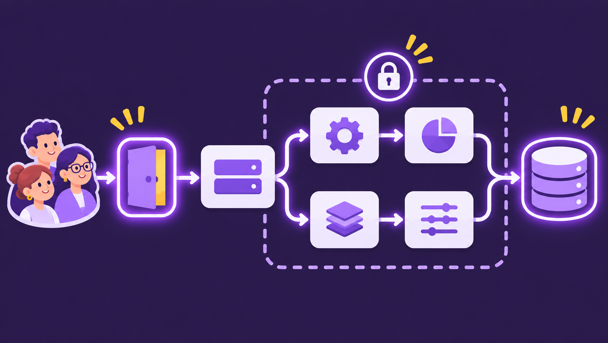
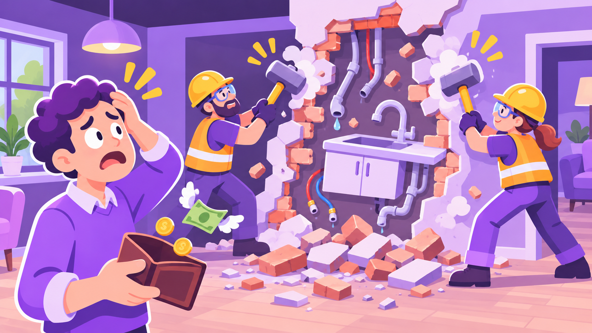
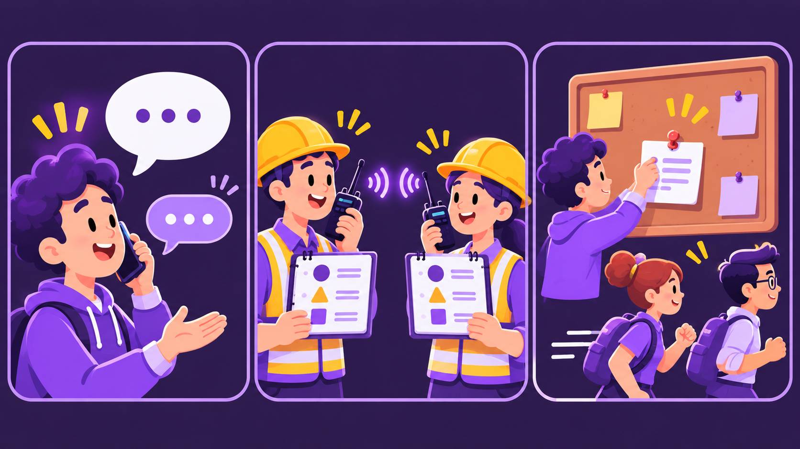
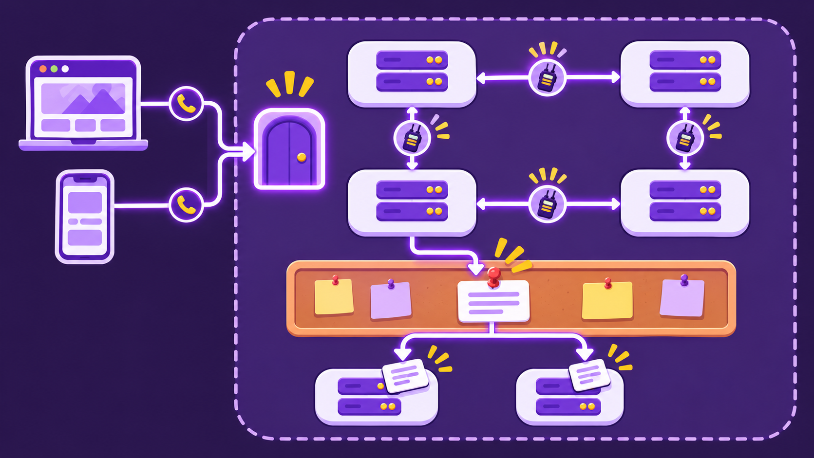
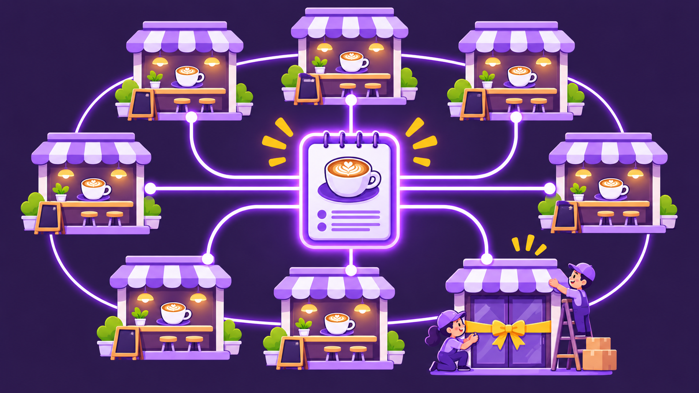
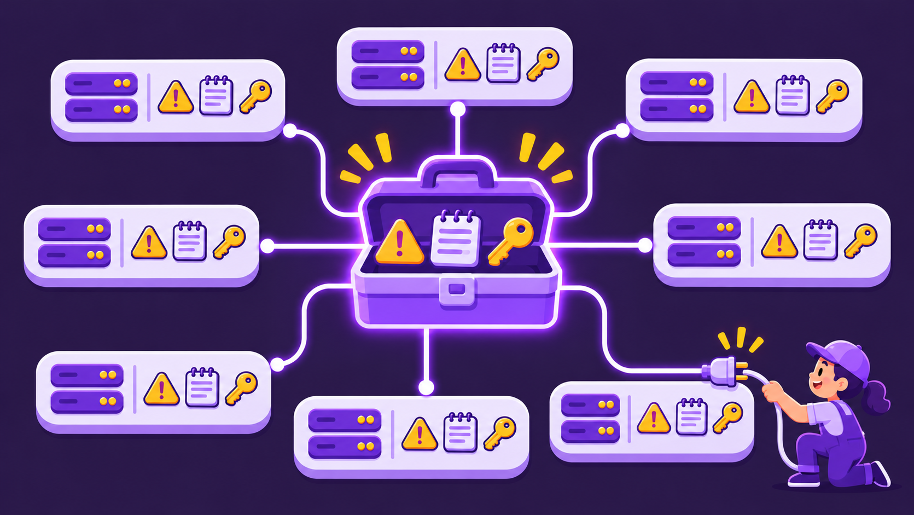

Design Backend Systems with Confidence
From writing code to designing systems

Your Roadmap from Code to Design
What · When · Architectures · How · Evolution
Check If You're Ready to Start
Who it's for, and what you need


What Is Backend Architecture Design?
Modularity, interfaces, and data flow
What Are Modules, Interfaces, and Data Flow?
Neighborhoods, roads, and traffic
What Does an Architecture Diagram Tell You?
Read a diagram in four steps



What Do You Gain by Designing First?
Save money, manage complexity, win support


What Is Modularity, and How Much Is Enough?
Not one big block, not fifty tiny pieces


What Is Separation of Concerns?
One clear job, one clear name

What Are Service Tiers?
Every service has its place

What Are the Main API Styles?
REST, gRPC, and events


What Happens When Every Team Talks Differently?
One standard, no adapters

What Are Shared Interfaces and Standard Libraries?
Solve it once, use it everywhere


What Is Scalability?
Bigger machines, more machines, no bottlenecks


What Is Robustness?
Fail small, recover fast

What Is Flexibility?
Make room for the next feature
What Is Observability?
See inside, skip the noise

What Is Security by Design?
Lock every door, not just the front
What Is Compliance?
When laws shape your architecture
What Are Performance and Uptime Requirements?
Speed, availability, and promises
What Is Complexity?
When it's too much, and what to do
What Does a System Really Cost?
More than the cloud bill
What Makes a Technology the Right Choice?
Pick what your team can support
What Is Architecture Documentation?
Write down the why, and keep it current
What Are Your Main Data Storage Choices?
The right place for each kind of data
What Is Caching?
Keep a fresh copy close by
What Are Queues?
Let slow work wait in line, not your users
What Is Load Balancing?
Spread traffic across servers, skip broken ones
What Is Database Replication?
Live copies of your database, kept in sync
What Is Sharding?
Split your data across several databases
What Are Consistency Trade-offs?
When copies disagree: wait, or answer anyway?
What Is Rate Limiting?
A fair request limit for every client
What Changes When Your Backend Calls an AI Model?
Slow, paid per use, and sometimes wrong
What Is Retrieval-Augmented Generation (RAG)?
The AI reads your documents first, then answers
What Are AI Agents?
AI that takes actions on its own
What Makes a Design Good?
Three questions to check any architecture
Know When to Design, and When Not To
Full design or focused design


A New Project or Product
Design it while nothing is in your way


A Big New Feature
A focused design for the parts it touches


Adding AI to Your System
Even a quick demo needs a design


Your System Is Getting Slow
Find the one step everyone waits for


Your Cloud Bill Keeps Growing
When costs grow faster than your users


Your System Keeps Breaking
Find the pattern behind the outages


The Same Logic Lives in Many Places
DRY: Don't Repeat Yourself


Services Keep Asking for the Same Data
Ask once, then pass it along


Maintenance Takes More and More Time
Automate it, or hand it off


Only One Person Knows How It Works
Share it, and write it down


Your Team Is Growing
Give each team a part it owns


A Big Jump in Traffic Is Coming
Test it before the day


You're Entering New Markets
Add new market rules with data, not code


A New Regulation Applies to You
Find the gaps before the deadline


You Need to Connect with Other Systems
One external API, one dedicated service


Your Technology Is Getting Outdated
Upgrade before support ends


A Security Incident or Audit Finding
Fix the design behind it, not just the incident


Full Redesign or Focused Design?
Three questions before you rebuild